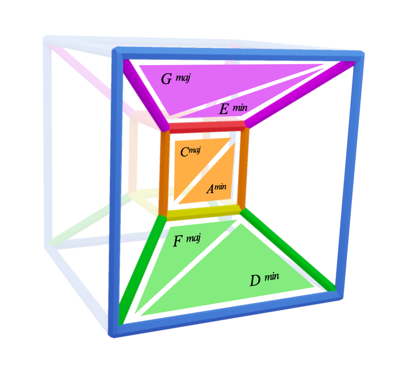
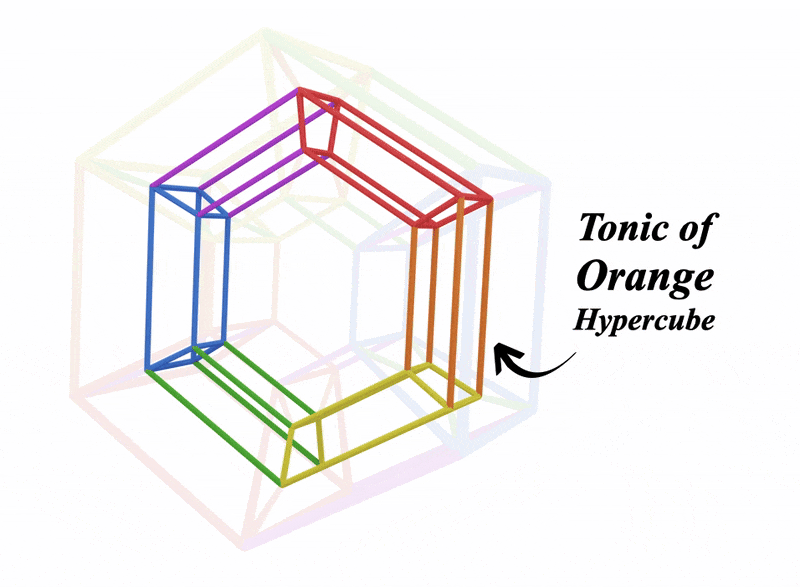

GEOMETRY:
Here's a summary of what we've learned:
Primary colours are squares:

Secondary colours are cubes:

Alpha cubes stack into hypercubes creating keys:
The three hypercubes connect in the metaprism allowing for any key change:

The metaprism produces arcades which connect keys of different colours:

Atria give all the tonic and diminished chords across the metaprism:
We've covered the foundations of the metaprism
There's so much to get out of these shapes
Building them and grasping them is just the beginning
I'd encourage you to recap the colour pages with this new insight you've gained
Or head over to the cook book for some more music
Back to Atria | Recap Colours | To the Cook Book!